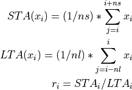
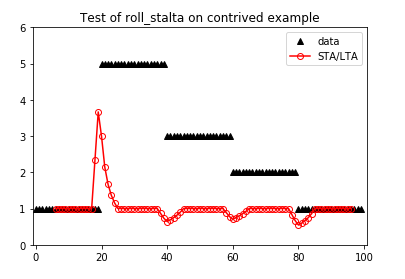

pycheron.rollseis.roll_stalta¶
-
roll_stalta(x, n_sta, n_lta, increment=1, fortran=False, logger=None)[source]¶ Simple rolling STA/LTA ratio calculation utilized for automatic detection of seismic signal arrival times.
roll_staltadoesn’t do any preprocessing of incoming data and merely calculates the ratio of the average value in the STA window to the average value in the LTA window. Windows are aligned so that the index is at the left edge of the STA window and at the right edge of the LTA window, e.g., [1]
[---------- LTA --------*]........ .......................[*- STA --]
For proper use of this algorithm seismic data should be preprocessed in following manner:
demean, detrend and taper the raw signal square the processed signal to get power
Parameters: - x (numpy.array) – input data vector
- n_sta (int) – integer STA window size
- n_lta (int) – integer LTA window size
- increment (int) – increment shift to use when sliding the window to the next location. For increments greater
than one, the rolling means will not align properly, hence the need for a dedicated
roll_staltafunction. Setting increment to a value greater than 1 will result in NaNs for all skipped over indices. - fortran (bool) – Whether to use Fortran or not. Note: Linux/iOS only
- logger (pycheron.util.logger.Logger) – logger object
Returns: Returns vector of values of the same length as x with each point containing the STA/LTA ratio at that point
Return type: numpy.array
Note
Values within n_lta - 1 of the beginning and n_sta - 1 of the end are set to NaNs
Example
import numpy as np from pycheron.rollseis.roll_stalta import roll_stalta import obspy from pycheron.psd.noise.deadChannel import DDT #Contrived example: x = [1,5,3,2,1] x = np.repeat(x,20) #calculate rolling_stalta with n_sta = 3, n_lta = 6, increment = 1 for above vector x p = roll_stalta(x,3,6)
Plotting
import matplotlib.pyplot as plt # Plot original data as black triangles plt.plot(x,marker='^',color = 'black', linestyle = 'None', label = 'data') #Plot rolling_stalta in red circles plt.plot(p, marker = 'o', color = 'red', markerfacecolor = 'None', label = 'STA/LTA') #Adjust plot limits to show upper/lower data points more clearly plt.xlim([-1,101]) plt.ylim([0,6]) #Add title and legend plt.title('Test of roll_stalta on contrived example') plt.legend(loc = 'upper right')
References
[1] http://en.wikipedia.org/wiki/First_break_picking